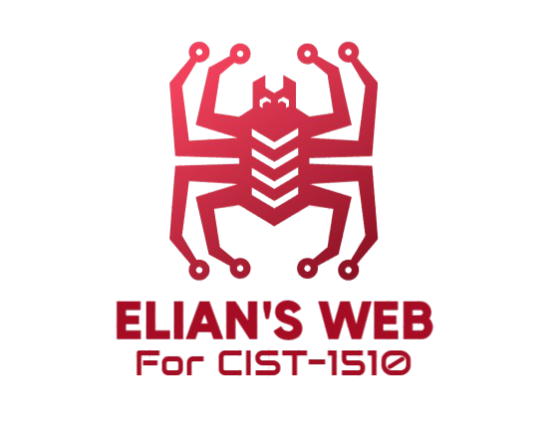
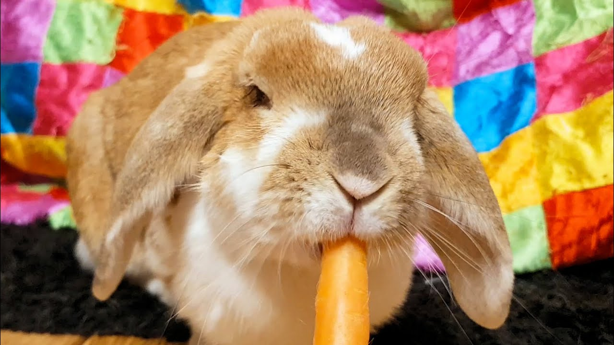
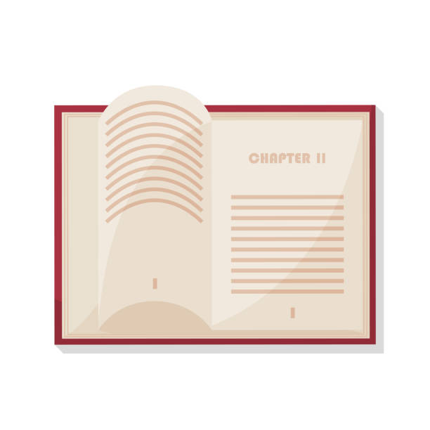

<html lang="en"></html>
<!--
  Elian Vasquez
  CIST1510
-->
  <head>
    <title>Elian's Web Homepage</title>
    <meta charset= "UTF-8">
    <link rel="stylesheet" href="css/styles.css">
    <meta name="viewport" content="width=device-width, initial-scale=1.0">
    <body>
      
      <div id="container">
      
          <header>
            <div class="header">
              <a href="index.html"></a>
            </div>
          </header>
          <div class ="topnav">
            
                <a href="../home/index.html">HOME</a>
              
                <a href="chapters/chapters.html">CHAPTERS</a>
              
                <a href="../Final Page/">FINAL PROJECT</a>
            
          </div>
          
        <main>
            <div id="welcome">
              <h1>WELCOME!</h1>
              
              <h2>Welcome to my <span class="action">very nice looking website!</span></h2>
                <p>Nothing really interesting here!</p>
                <p>enjoy this picture of a bunny...</p>
            </div>
            
            <div id="chapters">
              <h1>Chapters</h1>
              
              <p>the chapters pages shows all chapter work already done. 
                this ensures Mr. Williams knows were doing the work.
                For Example:</p>
                <ul>
                  <li>chapter01</li>
                  <li>chapter02</li>
                  <li>chapter03</li>
                  <li>etc...</li>
                </ul>
            </div>

            <div id="final">
              <h1>Final Page</h1>
              
              <p>The "Final" page is intended only for the final project page
                after the semester is over.
              </p>
            </div>
     
          </main>
            
          <div class="about">
            <h2> About Me </h2>
            <article>
              <figure>
                
                <figcaption>Me during a photoshoot for the rapper AshleyJ</figcaption>
              </figure>
              <section class="about">
                <p>Hello, My name is Elian. I'm currently in Gwinnett Tech for my AAS in Computer Programming.
                     Some hobbies I partake in are playing the drums, boxing/MMA, mechanics, photography, learning coding languages, and also cooking.
                     I also am very into exercsing and lifting, it helps me stay healthy and maintain my very nice 
                     Alpha-Male physique... Anyways, I enjoy mechanics, especially the type on cars, and I also stick my head into a bit of
                     photography here and there. Now, enough of me.</p>
              </section>
            </article>
          </div>

          <div class= "footer">
            <p>&copy;Copyright 2024. All Rights Reserved.</p>
            <p><a href="mailto:evasque4330@student.gwinnetttech.edu">evasque4330@student.gwinnetttech.edu</a></p>
          </div>    
      
        </div>
    </body>
</html>